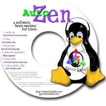
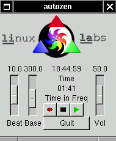

AutoZen is a software 'brain machine' for Linux. It generates sounds and colors that are meant to cause the brain to temporarily shift to a different dominant frequency and cause the user to experience an altered state of consciousness. It is similar to the devices seen in the 'Sharper Image' catalog and in magazine ads, but the price is a lot more attractive!
To our knowledge, the medical community has done very little research into these devices, and they may very well do nothing at all. The author has used AutoZen with good results, perhaps because he meditates regularly, employs wishful thinking, or is just strange. We make no warranty of any kind.
All the same, if you are under treatment for any psychiatric or neurological disorder, you might want to approach this with caution. We have never heard of any problems caused by any software or device of this nature other than some epileptics having problems with the ones that include flashing lights (but then, Pokemon causes the same problem).
Status
Version 2.1, by Steven James <pyro@linuxlabs.com>
License
AutoZen is Free software released under the GNU General Public License, also known as Copyleft.
Award
AutoZen was awarded 'Best Show Give-Away' by Linux Journal at USENIX ALS 2000, where we gave away MANY CDRs with AutoZen and six pre-made audio tracks.
Requirements
- Linux
- A soundcard
- OSS compatible driver (/dev/dsp)
- X
- GTK >= 1.2
- Headphones
References
Operation
You must use headphones for AutoZen to work at all. The effect depends on each ear receiving a different tone, and the combination of the inputs in the brain. If you are deaf in one ear, it will not work. See Theory for details.
The controls consist of 3 sliders: Base frequency, Beat Frequency, and Volume. The base frequency defaults to 300Hz which seems fine to me. It should be adjusted to whatever frequency feels (sounds) most comfortable to you. The beat frequency is the frequency you want to shift your brain to. The Volume is self explanatory.
A sequencer is available through the play/pause and stop buttons. The play/pause button's appearance will change to reflect the action taken when it is pressed:
|  |
|
Select a .seq file from the file list. Press 'OK' to start the sequence. |
|
Pause a running sequence. |
 |
Resume a paused sequence. |
|
Stop a running or paused sequence. (Surprise :-) |
|
Sequence file format
Sequence files are simple ASCII text command files. The commands are: BASE, VOLUME, SET, HOLD, SLIDE, PAUSE, HARMONICS, END, and EXIT
BASE n
Set the base frequency to n in Hz.
VOLUME n
Set the volume to n%. If this command is encountered during the automatic fade in, the fade is canceled and the volume jumps to this value.
FADE f n
Fade the volume to f% over the next n seconds.
SET n
The beat frequency will be set to n in hertz. N is expressed as a float (eg. 12.5)
HOLD n
Maintain current frequency for n seconds where n is an integer.
SLIDE f n
Change frequency from the current value to f (expressed as a float) over the next n seconds.
PAUSE
Pause the sequence. The sequence will resume when the user presses the pause button.
HARMONICS n
Sets the number of harmonics generated to n where n is an integer.
END
The sequence terminates. AutoZen continues to output the last beat and the sliders become usable again.
EXIT
The sequence ends and AutoZen exits.
Example:
The following sequence will start at 14 Hz for 5 seconds, slide down to 10 Hz over the next 8 seconds, Stay there for 10 seconds, then pause.
When resumed, it will slide back to 14 Hz over the next 30 seconds and end.
SET 14.0
HOLD 5
SLIDE 10.0 8
HOLD 10
PAUSE
SLIDE 14.0 30
END
seq2wav
seq2wav is a command line utility to convert an AutoZen .seq file into a .wav suitable for burning to an Audio CDR(W). IMPORTANT NOTE: Compressing the .wav to an MP3 is not likely to work. The encoder is likely to consider the precise phase relationship between harmonics and channels to be unimportant and thus ruin the effectiveness of the sound.
To use: seq2wav <sequence.seq> <audio.wav>
The PAUSE command is ignored by seq2wav, EXIT and END both exit.
colorbox feature
When AutoZen is invoked with the -colorbox option (autozen -colorbox [<x> <y>] where x and y are the starting dimensions of the window), A second window is opened which will display a solid background which oscillates between red and green. The color change is synchronized to the audio phase. This might provide a second point of stimulation in the visual cortex where color information is processed. An extra horizontal slider will be created at the bottom of the AutoZen controls. That slider can be used to adjust the phase relationship between the colorbox and the sound to maximize the effectiveness of autozen or to produce different effects. See 'Theory of Operation' for details.
Please do not use the colorbox option in a situation where a person with an epileptic condition might see the colorbox! At a minimum, it will be quite annoying. It could could trigger a seizure. For that reason, the default is to NOT display the colorbox.
A later version will offer a colorbox tuned for people with red/green color blindness.
Theory of Operation
We detect the bearing of a sound based in part on the phase difference between the input from the right and left ear. The brain manages that by sending the signal from the ear through two parallel chains of neurons which cross-connect at each neuron. The neurons in that system, at points where the signals constructively interfere, are more strongly stimulated, and thus, indicate the phase difference. In the presence of a beat frequency, the phase difference continuously cycles with the beat. In this way, the strongest stimulation point will move back and forth over the chains of neurons, introducing the beat frequency into what amounts to a VERY complex resonant system. The continual stimulation 'guides' the brain into resonance with that beat frequency.
The colorbox is an experimental feature aimed at providing a second stimulation point in the visual cortex. The visual cortex processes color by determining a red/green and a yellow/blue differential in each small cluster of cones from the center of the retina. The colorbox window should introduce the beat frequency at that point in the brain by continually oscillating that differential.
Since there will be a signal delay between the visual cortex and the auditory, a colorbox phase adjustment is provided to allow for synchronization. At this time, I don't know how much (if at all) the length of the signal delay varies between different individuals. It may (or may not) be useful to set up a deliberate phase differential between the audio and visual elements to create an interference pattern in the brain (such a pattern may even be impossible to sustain). Please email me with the results of your experimentation.
Tips for use
The author has found AutoZen to be more effective when a session is started with the beat frequency set close to the frequency that the brain is currently at, and then slowly sliding to the target frequency. Starting at mid Beta is a good bet if you can't tell what frequency your brain is at.
Unless you are experienced with deep meditation with your eyes open, it will be more effective with eyes closed. That's one good reason to use the sequencer.
Brain frequencies
The dominant frequency of the brain is divided into 4 different ranges which correlate with the state of mind.
Beta (15 - 40)
This is normal waking consciousness.
Alpha (9 - 14)
This is a state of daydreaming or light meditation. It is also seen during the lightest stage of sleep.
Theta (5 - 8)
This is a state of sleep (unconscious) deep meditation or drug induced altered state.
Delta (0 - 4)
This is only encountered in extremely deep meditation (rare) or deep sleep (every 90 minutes).
Bugs and Misfeatures
- Record button doesn't do anything yet.
- Sound sometimes 'stumbles' on a busy machine or when play is pressed to start a sequence.
Changelog
2.1
- Added ability to specify number of harmonics on command line.
- Added HARMONICS command to AutoZen and seq2wav.
- A VOLUME command at the beginning of a sequence is now processed before AutoZen starts producing sound.
- The source tar has been fully debianized.
2.0
- Added colorbox to AutoZen.
- At user request, the max beat frequency is now 40 Hz.
1.3.1
- Added EXIT and BASE sequencer commands to AutoZen and seq2wav.
- Added VOLUME and FADE sequencer commands to AutoZen and seq2wav to aid in producing audio tracks and more custom live sequences.
- Added more pre-made sequences.
- Some simple mods to the includes to make compilation under BSD easier.
- More code cleanup. Moved a few more constants to #defines for easy modification. In particular, the maximum beat frequency is now @define BEAT_MAX. Some people wanted to try higher frequencies.
1.2.1
- A small but important bug in the sound generation function. When it's too early, (2^i) looks like it should do pow(2,i) :-)
1.2
- Much improved effectiveness. It now uses several upper harmonics of the tones with the same phase relation as the base frequency.
- Fade in/out. Audio is now faded in when AutoZen is started, and fades back out when Quit is pressed. Press Quit twice to exit instantly.
- Play button graphic now changes based on state. Now displays vertical bars when playing a sequence and a yellow triangle when a sequence is paused.
- More code cleanup. Factored sound generation into logical functions.
- Generalized sound functions so that harmonics can be easily mixed in with the base frequency.
- Added seq2wav.
1.1 Internal version, not released.
1.0 This is the initial public release.
Download
AutoZen-2.1.tar.gz
Older versions
AutoZen-1.3.1.tar.gz
AutoZen-1.2.1.tar.gz
AutoZen-1.0.tar.gz
To specify your requirements, obtain pricing, or get more information on Linux Labs offerings click here or call Linux Labs at 404-577-7747.
|